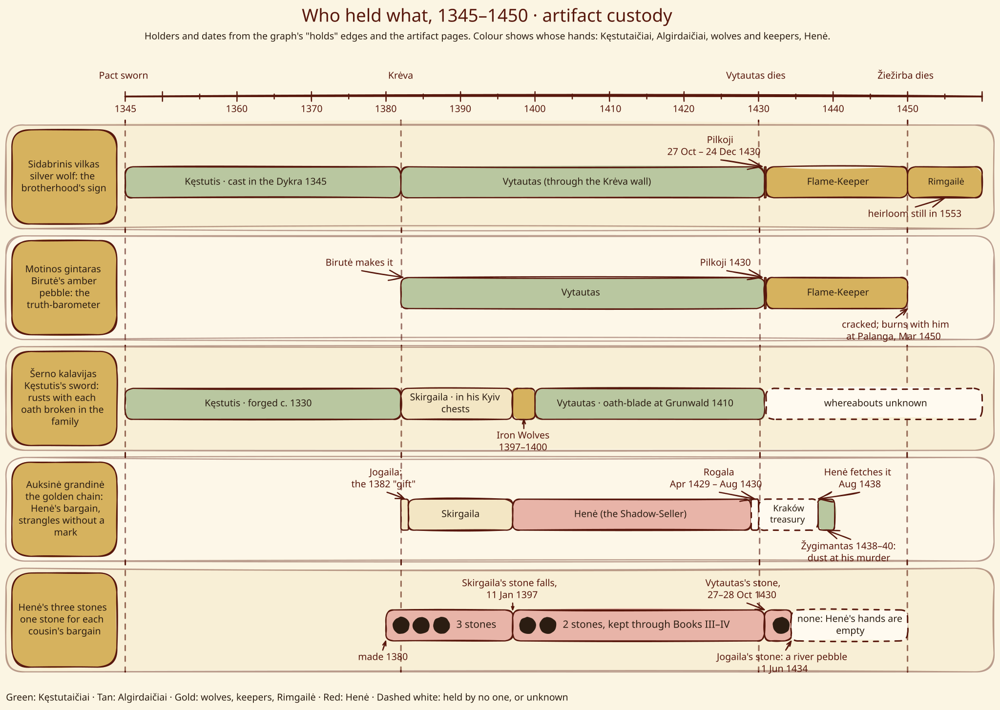
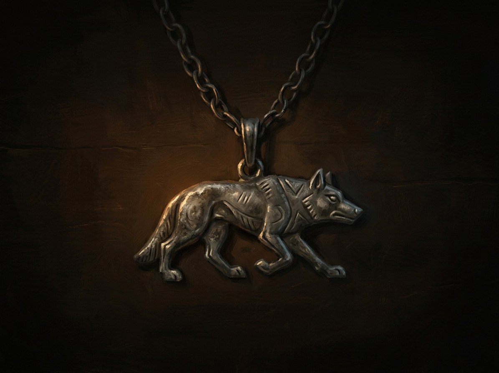

Sidabrinis vilkas (Kęstutis’s amulet)¶
Custody, 1345–1450¶


Artifact custody timeline¶
The silver wolf is the top lane.
Sidabrinis vilkas (Kęstutis’s amulet)

Sidabrinis vilkas (Kęstutis’s amulet) · artifact¶
Type |
artifact |
Years |
made 1345 |
Note |
Sidabrinis vilkas: Kęstutis’s cast-silver amulet; sign of the Iron Wolf brotherhood. |
Description¶
A silver wolf a hand long, with raised snout and a worn coat. Old pagan patterns run along its flank, and under the belly is a small second mark: a wolf’s head without a collar (Book VI ch. 5). By Book V a tooth is broken and the silver is blackened in the hollows and bright only where skin touches it (V ch. 7).
Power¶
An identity token. Every sworn vilkatas recognises the brotherhood’s sign and touches the scar at his throat before it (V ch. 7). Outsiders read it too: the Order’s border guards when he shows it at the fort (Book I ch. 17), Jogaila, who cannot hold its gaze (I ch. 26, III ch. 3, 13, 24). It carries no spell of its own.
Rule & cost¶
It is not the holder’s to give away. It belongs to the brotherhood, so Vytautas cannot offer it to the Dykra himself (Book I ch. 16; The Iron Wolves §16). It must pass hand to hand “bread for bread”. Its meaning dies with the pack.
Origin¶
[The saga’s invention] Cast in the Dykra from the silver of three drowned knights and given to Kęstutis by the Wolf-Father Kuolas after the Pact, in winter 1345–46 (Book VI ch. 5). The handover scene does not establish the casting date.
Arc across the books¶
Kęstutis, winter 1345–46 to 1382. Worn on a leather strap; sewn into his lining at Marienburg in 1361 (Book VI ch. 18; Book I ch. 8). He touches it before the arrest (I ch. 2).
Vytautas, 1382-1430. Passed through the gap beneath the Krėva wall (“let the wolf stay with the wolf”, I ch. 8). Jonas’s pack halts before it (I ch. 25). Worn through Books II-IV to his deathbed (IV ch. 26, 29).
Pilkoji, 27 Oct-24 Dec 1430. She keeps it until Kūčios.
The Flame-Keeper, 1430-1449. She gives it to him in the circle of fourteen wolves, who touch it one by one, Kirmėlė last (V ch. 7).
Rimgailė, Palanga, March 1450. He gives it to her “bread for bread” and she puts it under her threshold (V ch. 29). It is seen again on the keeper’s neck in a vision in 1553 (V ch. 30).
Holders: Kęstutis to 1382, Vytautas 1382-1430, Pilkoji 1430, the Flame-Keeper from Kūčios 1430-31 to 1450, then Rimgailė of Palanga from 1450.
Relations
Created by: Vilkatai (Iron Wolves) — Carved with the Iron Wolves’ sign; given to Kęstutis 1345.
Held by: Kęstutis (…–1382) · Pilkoji (the Grey One, Vilkų Motina) (1430–1430) — From Vytautas’s body, 27 Oct - 24 Dec 1430. · Rimgailė (Palanga fisherwoman) (1450–…) — Given by the dying keeper at Palanga (Book V ch. 29-30); an heirloom in 1553. · Vytautas (1382–1430) · Žiežirba (the Flame-Keeper, Book V POV) (1431–1450) — From Pilkoji at Kūčios (24 Dec) 1430, i.e. the winter of 1430-31.
Bearing Belongs to the brotherhood, not to the holder. It must pass hand to hand, bread for bread. Every sworn vilkatas recognises it
Holders Kęstutis 1345 to 1382 → Vytautas 1382 to 27 Oct 1430 → Pilkoji 27 Oct to 24 Dec 1430 → the Flame-Keeper from Kūčios 1430 to March 1450 → Rimgailė of Palanga from 1450
Power An identity token. Carries no spell of its own. The Order's border guards, and Jogaila, read it too
Rule & cost Not the holder's to give away: Vytautas cannot offer it to the Dykra himself. Its meaning dies with the pack
Appearance. A silver wolf a hand long with a raised snout and a worn coat, old pagan patterns along its flank, and under the belly a small second mark: a wolf's head without a collar. By Book V a tooth is broken and the silver blackened in the hollows.
Origin. Cast in the Dykra in 1345 from the silver of three drowned knights and given to Kęstutis by the Wolf-Father Kuolas after the Pact (Book VI ch. 5).
Gaze. Jogaila cannot hold its gaze, because he knows what the sign means (Book I ch. 26).
Passage. Kęstutis passes it to Vytautas through the gap beneath the Krėva wall: let the wolf stay with the wolf (Book I ch. 8).
The circle. Pilkoji gives it to the Flame-Keeper at Kūčios in the circle of fourteen wolves, who touch it one by one, Kirmėlė last (Book V ch. 7).
Under a threshold. In March 1450 he gives it to Rimgailė at Palanga, bread for bread, and she puts it under her threshold. It is an heirloom in 1553 and seen on the keeper's neck in a vision (Book V ch. 29-30).
Connections¶
graph LR
flame_keeper["Žiežirba (the Flame-Keeper, Book V POV)"]
iron_wolves["Vilkatai (Iron Wolves)"]
kestutis["Kęstutis"]
pilkoji["Pilkoji (the Grey One, Vilkų Motina)"]
rimgaile_palanga["Rimgailė (Palanga fisherwoman)"]
silver_wolf["Sidabrinis vilkas (Kęstutis's amulet)"]
vytautas["Vytautas"]
silver_wolf -->|Created by| iron_wolves
kestutis -->|Holds| silver_wolf
vytautas -->|Holds| silver_wolf
flame_keeper -->|Holds| silver_wolf
pilkoji -->|Holds| silver_wolf
rimgaile_palanga -->|Holds| silver_wolf
style silver_wolf stroke-width:3px